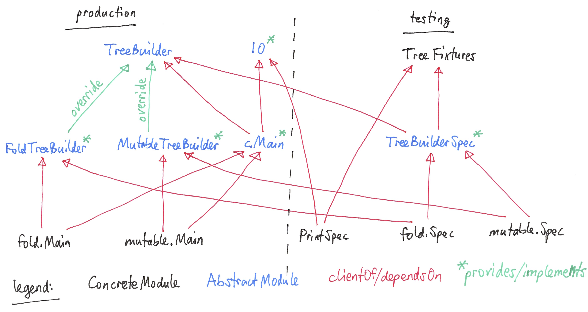

3. The Imperative and Object-Oriented Paradigms in Scala¶
In this chapter, we discuss the imperative and object-oriented programming paradigms with examples in Scala.
3.1. Options for running Scala code¶
In this section, we discuss the different options for running Scala code, including applications and tests.
The simplest way to run Scala code fragments is through the Scala REPL (read-eval-print loop). We can launch the Scala REPL and then evaluate definitions and expressions:
$ scala Welcome to Scala 2.12.1 (Java HotSpot(TM) 64-Bit Server VM, Java 1.8.0_102). Type in expressions for evaluation. Or try :help. scala> 3 + 4 res0: Int = 7 scala> def f(x: Int) = x + 2 f: (x: Int)Int scala> f(3) res1: Int = 5 scala> val z = f(4) z: Int = 6 scala> Seq(1, 2, 3).map(f) res2: Seq[Int] = List(3, 4, 5)
This is a very effective, painless way to conduct initial explorations. The drawback of this approach is a lack of support for managed dependencies, which are required for more advanced work. In that case, starting the Scala REPL through sbt as discussed below is a much better choice. Managing the Scala/Java classpath manually is discouraged.
You can also run simple scripts (with optional command-line arguments) directly through the scala interpreter:
$ cat > blah.scala println(args.toList) $ scala blah.scala 1 2 3 List(1, 2, 3)
In a Scala IDE such as IntelliJ IDEA, we can run Scala applications (classes/objects with a
mainmethod or objects extending theApptrait) and Scala tests from within the IDE. To pass command-line arguments to an application, we have to create a suitable run configuration.In IntelliJ IDEA, Scala worksheets are a convenient way to do REPL-style exploratory programming while being able to modify and save all your code. Check out this example, especially the simple option and list examples. For simple testing, you can intersperse assertions within your code. Worksheets can live in any folder and coexist with other code. So you can start exploring something in a worksheet and then move it into your production code when appropriate. The Eclipse Scala IDE has a similar feature.
It is best to use sbt (the Scala Build Tool) for projects with one or more external dependencies because of sbt’s (and similar build tools’) ability to manage these dependencies in a declarative way:
$ sbt test $ sbt run $ sbt "run arg1 arg2 ..." $ sbt "runMain my.pkg.Main arg1 arg2 ..." $ sbt test:run
In addition, sbt allows you to start a REPL that exposes the code in your project and its managed dependencies. This is the preferred way to explore existing libraries:
$ sbt console
You can also pull in the additional dependencies from the test scope:
$ sbt test:console
If you want to bypass your own code in case of, say, compile-time errors, you can use one of these tasks:
$ sbt consoleQuick $ sbt test:consoleQuick
In conjunction with a text editor, sbt’s triggered execution for testing will significantly shorten the edit-compile-run/test cycle, for example:
$ sbt ... > ~ test
Finally, to turn an sbt-based Scala application into a script you can run outside sbt, you can use the sbt-native-packager plugin. To use this plugin, add this line to the end of
build.sbt:enablePlugins(JavaAppPackaging)
and this one to
project/plugins.sbt:addSbtPlugin("com.typesafe.sbt" % "sbt-native-packager" % "1.1.4")
Then, after any change to your sources, you can create/update the script and run it from the command line like so:
$ sbt stage ... $ ./target/universal/stage/bin/myapp-scala arg1 arg2 ...
3.2. The role of console applications¶
Console applications have always been an important part of the Unix command-line environment. The typical console application interacts with its environment in the following ways:
zero or more application-specific command-line arguments for passing options to the application:
app arg1 arg2 ...standard input (stdin) for reading the input data
standard output (stdout) for writing the output data
standard error (stderr) for displaying error messages separately from the output data
Applications written in this way can function as composable building blocks using Unix pipes. Using these standard I/O mechanisms is much more flexible than reading from or writing to files whose names are hardcoded in the program.
E.g., the yes command outputs its arguments forever on consecutive output lines,
the head command outputs a finite prefix of its input,
and the wc command counts the number of characters, words, or lines:
yes hello | head -n 10 | wc -l
You may wonder how the upstream (left) stages in the pipeline know when to terminate.
Concretely, how does the yes command know to terminate after head reads the first ten lines.
When head is done, it closes its input stream, and yes will receive an error signal called SIGPIPE when it tries to write further data to that stream.
The default response to this error signal is termination.
We can also use the control structures built into the shell. E.g., the following loop prints an infinite sequence of consecutive integers starting from 0:
n=0 ; while :; do echo $n ; ((n=n+1)) ; done
These techniques are useful for producing test data for our own applications. To this end, we can redirect output to a newly created file using this syntax:
n=0 ; while :; do echo $n ; ((n=n+1)) ; done > testdata.txt
If testdata.txt already exists, it will be overwritten when using this syntax.
We can also append to an existing file:
... >> testdata.txt
Similarly, we can redirect input from a file using this notation:
wc -l < testdata.txt
There is a close relationship between Unix pipes and functional programming: When viewing a console application as a function that transforms its input to its output, Unix pipes correspond to function composition. The pipeline p | q corresponds to the function composition q o p.
3.2.1. Console applications in Scala¶
The following techniques are useful for creating console applications in Scala.
As in Java, command-line arguments are available to a Scala application as args of type Array[String].
We can read the standard input as lines using this iterator:
val lines = scala.io.Source.stdin.getLines
This gives you an iterator of strings with each item representing one line. When the iterator has no more items, you are done reading all the input. (See also this concise reference.)
To break the standard input down further into words, we can use this recipe:
val words = lines.flatMap(_.split("(?U)[^\\p{Alpha}0-9']+"))
In Scala, print and println print to stdout.
By default, the Java virtual machine ignores the SIGPIPE error signal.
Therefore, to use a Scala (or Java) console applications as an upstream component that produces an infinite output sequence, we have to configure a signal handler for it that terminates on SIGPIPE:
import sun.misc.Signal
Signal.handle(new Signal("PIPE"), _ => scala.sys.exit())
Warning
sun.misc.Signal is a less widely known feature of Java and may be removed or replaced in the future.
3.2.2. The importance of constant-space complexity¶
Common application scenarios involve large volumes of input data or infinite input streams, e.g., sensor data from an internet-of-things device. To achieve reliability and scalability of such applications, it is critical to ensure that the application does not exceed a constant memory footprint during its execution.
Concretely, whenever possible, this means processing one input item at a time and then forgetting about it, rather than storing the entire input in memory. This version of a program that echoes back and counts its input lines has constant-space complexity:
var count = 0
for (line <- lines) {
println(line)
count += 1
}
println(line + " lines counted")
By contrast, this version has linear-space complexity and may run out of space on a large volume of input data:
var count = 0
val listOfLines = lines.toList
for (line <- listOfLines) {
println(line)
count += 1
}
println(line + " lines counted")
In sum, to achieve constant-space complexity, it is usually best to represent the input data as an iterator instead of converting it to an in-memory collection such as a list. Iterators support most of the same behaviors as in-memory collections.
3.3. Choices for testing Scala code¶
There are various basic techniques and libraries/frameworks for testing Scala code.
The simplest way is to intersperse assertions within your code. This is particularly effective for scripts and worksheets:
val l = List(1, 2, 3)
assert { l.contains(2) }
The following testing libraries/frameworks work well with Scala.
The familiar JUnit can be used directly.
ScalaCheck is a testing framework for Scala that emphasizes property-based testing, including universally quantified properties, such as “for all lists
xandy, the value of(x ++ y).lengthis equal tox.length + y.length”ScalaTest is a testing framework for Scala that supports a broad range of test styles including behavior-driven design, including integration with ScalaCheck.
specs2 is a specification-based testing library that also supports integration with ScalaCheck.
For faster turnaround, we can combine these techniques with triggered execution.
The echotest example shows some of these libraries in action.
3.4. The role of logging¶
Logging is a common dynamic nonfunctional requirement that is useful throughout the lifecycle of a system. Logging can be challenging because it is a cross-cutting concern that arises throughout the codebase.
In its simplest form, logging can consist of ordinary print statements, preferably to the standard error stream (stderr):
System.err.println("something went wrong: " + anObject)
This allows displaying (or redirecting) error messages separately from output data.
For more complex projects, it is advantageous to be able to configure logging centrally, such as suppressing log messages below a certain log level indicating the severity of the message, configuring the destination of the log messages, or disabling logging altogether.
Logging frameworks have arisen to address this need. Modern logging frameworks have very low performance overhead and are a convenient and effective way to achieve professional-grade separation of concerns with respect to logging.
3.4.1. Logging in Scala¶
For example, the log4s wrapper provides a convenient logging mechanism for Scala. To use log4s minimally, the following steps are required:
Add external dependencies for log4s and a simple slf4j backend implementation:
"org.log4s" %% "log4s" % "1.6.1", "org.slf4j" % "slf4j-simple" % "1.7.25"
If you require a more verbose (lower severity) log level than the default of
INFO, such asDEBUG, add a configuration filesrc/main/resources/simplelogger.propertieswith contents:org.slf4j.simpleLogger.defaultLogLevel = debug
Now you are ready to access and use your logger:
private val logger = org.log4s.getLogger logger.debug(f"howMany = $howMany minLength = $minLength lastNWords = $lastNWords")
This produces informative debugging output such as:
[main] DEBUG edu.luc.cs.cs371.topwords.TopWords - howMany = 10 minLength = 6 lastNWords = 1000
3.5. Defining domain models in imperative and object-oriented languages¶
In imperative and object-oriented languages, the basic type abstractions are
addressing: pointers, references
aggregation: structs/records, arrays
example: node in a linked list
variation: tagged unions, multiple implementations of an interface
example: mutable set abstraction
add element
remove element
check whether an element is present
check if empty
how many elements
several possible implementations
reasonable: binary search tree, hash table, bit vector (for small underlying domains)
less reasonable: array, linked list
see also this table of collection implementations
In an object-oriented language, we commonly use a combination of design patterns (based on these basic abstractions) to represent domain model structures and associated behaviors:
3.5.1. Object-oriented Scala as a “better Java”¶
Scala offers various improvements over Java, including:
traits: generalization of interfaces and restricted form of abstract classes, can be combined/stacked
package structure decoupled from folder hierarchy
higher-kinded types (advanced topic)
More recent versions of Java, however, have started to echo some these advances:
lambda expressions
default methods in interfaces
We will study these features as we encounter them.
Todo
examples below after discussing the next topic
3.6. Using Scala traits for modularity and dependency injection¶
Scala traits are abstract types that can serve as fully abstract interfaces as well as partially implemented, composable building blocks (mixins). Unlike Java interfaces (prior to Java 8), Scala traits can have method implementations (and state). The Thin Cake idiom shows how traits can help us achieve the following two design goals:
testability
avoidance of code duplication (“DRY”)
Note
We deliberately call Thin Cake an idiom as opposed to a pattern because it is language-specific.
We will draw examples for this section from the process tree example.
First, to achieve testability, we can define the desired functionality, such as common.IO, as its own trait instead of a concrete class or part of some other trait such as common.Main.
Such traits are providers of some functionality, while building blocks that use this functionality are clients, such as``common.Main`` (on the production side) and PrintSpec (on the testing side).
Specifically, we use PrintSpec to test common.IO in isolation, independently of common.Main.
To manage the growing complexity of a system, we usually try to decompose it into its design dimensions. In the process tree example, we recognize these design dimensions:
mutable versus immutable implementation
run in production versus testing
To avoid code duplication in the presence of multiple design dimensions, we can again leverage Scala traits as building blocks. Along some of the dimensions, there are three possible roles:
provider, e.g., the specific implementations MutableTreeBuilder, FoldTreeBuilder, etc.
client, e.g., the various main objects on the production side, and the TreeBuilderSpec on the testing side
contract, the common abstraction between provider and client, e.g., TreeBuilder
Usually, when there is a common contract, a provider overrides some or all of the abstract behaviors declared in the contract.
Some building blocks have more than one role. E.g., common.Main is a client of (depends on) TreeBuilder but provides the main application behavior that the concrete main objects need.
Similarly, TreeBuilderSpec also depends on TreeBuilder but provides the test code that the concrete test classes (Spec) need.
This arrangement enables us to mix-and-match the desired TreeBuilder implementation with either common.Main for production or TreeBuilderSpec for testing.
The following figure shows the roles of and relationships among the various building blocks of the process tree example.

Dependency injection (DI) is a technique for supplying a dependency to a client from outside, thereby relieving the client from the responsibility of “finding” its dependency, i.e., performing dependency lookup. In response to the popularity of dependency injection, numerous DI frameworks, such as Spring and Guice, have arisen.
The Thin Cake idiom provides basic DI in Scala without the need for a DI framework.
To recap, common.Main cannot run on its own but declares by extending TreeBuilder that it requires an implementation of the buildTree method.
One of the TreeBuilder implementation traits, such as FoldTreeBuilder can satisfy this dependency.
The actual “injection” takes place when we inject, say, FoldTreeBuilder into common.Main in the definition of the concrete main object fold.Main.